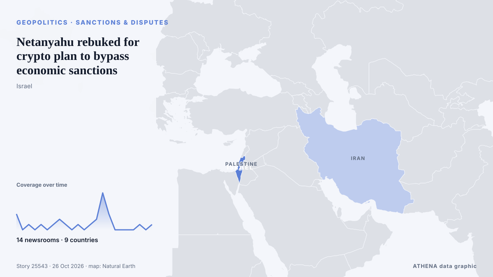

Netanyahu rebuked for crypto plan to bypass economic sanctions

The comments drew a rare rebuke by the Bank of Israel, which said cryptocurrencies cannot serve as a route to bypass sanctions. από The New Arab
Αναφέρθηκε ανεξάρτητα από 14 μέσα σε 9 χώρες από τις 23 Οκτ, πρώτο από το Haaretz (English)· η κάλυψη εξασθενεί. Το ATHENA εκτιμά τον κίνδυνο μέτριο (3.8/10), κυρίως λόγω της σοβαρότητας της βλάβης που περιγράφεται και της ποιότητας της τεκμηρίωσης. Η βεβαιότητα είναι 90% (υψηλή), καθώς το επιβεβαιώνουν 14 ανεξάρτητα μέσα με μέση αξιοπιστία πηγών 79%.
Γιατί έχει σημασία: Οι εξελίξεις στην ασφάλεια και τη διπλωματία μπορούν να μετατοπίσουν συμμαχίες, εμπόριο και αγορές πολύ πέρα από τις χώρες που εμπλέκονται.
Τι άλλαξε: 6 νέες αναφορές από 6 μέσα στο 24ωρο έως 26 Οκτ.
Οι τίτλοι των ειδήσεων παρουσιάζονται στα αγγλικά, όπως δημοσιεύτηκαν.
Με μια ματιά
Επιλέγεται, βαθμολογείται και γράφεται από τη δημοσιευμένη μεθοδολογία του ATHENA. Κανένας συντάκτης δεν παρεμβαίνει σε μεμονωμένα γεγονότα. Πώς παράγεται ›
| 23 Oct 17:12 UTC | 3 |
|---|---|
| 23 Oct 20:12 UTC | 0 |
| 23 Oct 23:12 UTC | 1 |
| 24 Oct 02:12 UTC | 0 |
| 24 Oct 05:12 UTC | 1 |
| 24 Oct 08:12 UTC | 0 |
| 24 Oct 11:12 UTC | 1 |
| 24 Oct 14:12 UTC | 2 |
| 24 Oct 17:12 UTC | 1 |
| 24 Oct 20:12 UTC | 0 |
| 24 Oct 23:12 UTC | 1 |
| 25 Oct 02:12 UTC | 0 |
| 25 Oct 05:12 UTC | 1 |
| 25 Oct 08:12 UTC | 2 |
| 25 Oct 11:12 UTC | 7 |
| 25 Oct 14:12 UTC | 3 |
| 25 Oct 17:12 UTC | 0 |
| 25 Oct 20:12 UTC | 0 |
| 25 Oct 23:12 UTC | 0 |
| 26 Oct 02:12 UTC | 0 |
| 26 Oct 05:12 UTC | 1 |
| 26 Oct 08:12 UTC | 0 |
| 26 Oct 11:12 UTC | 1 |
| 23 Oct 17:20 UTC | 2.7 |
|---|---|
| 23 Oct 18:05 UTC | 3.2 |
| 26 Oct 12:18 UTC | 3.8 |
Γιατί αυτοί οι αριθμοί
Σημασία
Κίνδυνος
Βεβαιότητα
Η κάλυψη — ποιος το ανέφερε και πότε
ο τίτλος όπως δημοσιεύτηκε · ανοίγει το πρωτότυπο- Haaretz (English) · Ισραήλ · IsraelNetanyahu says Israel must prepare for banking sanctions, floats crypto as a possible bypass
- The Jerusalem Post · Ισραήλ · IsraelNetanyahu warns Israel could face banking sanctions, prepares alternative financial system
- Haaretz (English) · Ισραήλ · IsraelInstead of averting sanctions, Netanyahu offers Israelis an Iran-style blockchain economy
- Anadolu Agency (English) · Τουρκία · TurkeyNetanyahu says end to US military aid to Israel ‘only a matter of time’
- Middle East Eye · INTNetanyahu tells Israelis to brace for sanctions, suggests crypto workaround
- Al Jazeera English · Κατάρ · QatarNetanyahu floats Crypto to bypass sanctions
- Türkiye Today · Τουρκία · TurkeyNetanyahu orders plan to bypass banking sanctions, eyes blockchain as option
- The Straits Times · Σιγκαπούρη · SingaporeNetanyahu says Israel mulling over crypto ahead of possible sanctions
- Haaretz (English) · Ισραήλ · IsraelBank of Israel against Netanyahu: Cryptocurrencies cannot be used to circumvent sanctions
- Express Tribune · Πακιστάν · PakistanOpposition leader says Netanyahu ‘no longer fit’ to lead Israel
- Anadolu Agency (English) · Τουρκία · TurkeyCryptocurrencies cannot circumvent sanctions: Bank of Israel responds to Netanyahu
- Türkiye Today · Τουρκία · TurkeyBank of Israel says crypto cannot be used to bypass sanctions
- Express Tribune · Πακιστάν · PakistanNetanyahu rebuked for plan to use crypto to bypass economic sanctions
- The Jerusalem Post · Ισραήλ · IsraelNetanyahu's crypto plan could cause 'irreversible damage' to Israeli economy, business leaders warn
- Middle East Eye · INT'Diplomatic and financial isolation': Netanyahu’s crypto plan to bypass sanctions draws rebuke
- The Straits Times · Σιγκαπούρη · SingaporeNetanyahu rebuked for plan to use crypto to bypass economic sanctions
- Al-Monitor · Ηνωμένες Πολιτείες · United StatesNetanyahu rebuked for plan to use crypto to bypass economic sanctions
- Arab News · Σαουδική Αραβία · Saudi ArabiaNetanyahu rebuked for plan to use crypto to bypass economic sanctions
- Cyprus Mail · Κύπρος · CyprusNetanyahu rebuked for plan to use crypto to bypass economic sanctions
- Middle East Eye · INT'Diplomatic and financial isolation': Netanyahu’s crypto plan to bypass sanctions draws rebuke
- Al Jazeera English · Κατάρ · QatarNetanyahu’s pitch: Can Israel use crypto to evade economic sanctions?
- The New Arab · INTNetanyahu rebuked for crypto plan to bypass economic sanctions
- Times of India · Ινδία · India'BibiCoin policy': Netanyahu faces backlash over plan to use crypto to bypass sanctions
- Asharq Al-Awsat (English) · Σαουδική Αραβία · Saudi ArabiaNetanyahu Rebuked for Plan to Use Crypto to Bypass Economic Sanctions
- Haaretz (English) · Ισραήλ · IsraelCapital controls, no imports: What Netanyahu's crypto economy would mean for Israel